Chapter 5.1 LXQt Panel¶
LXQt Panel is the bar situated at the bottom of your screen by default. The panel contains an application menu, a desktop switcher, a quicklaunch bar, a taskbar, a system tray containing applets, and a clock. The panel is highly configurable with a number of settings and plugins which is detailed in the Customizing section and also contains how to add or remove applets. To see information on widgets not installed by default see the Non-Default Widgets section.
Usage¶
The application menu allows you to browse and search through available programs; a keyboard shortcut is conveniently available for this and is set to Super(Windows) by default. The menu has many subcategories to launch each application. To move an application from the menu to the desktop right click on it and select . The menu has options to , , , , , or . If you want to lock your screen use . If you want to lock your screen select . If you mouseover a program you can see a description of that program in the menu. To go back one level or close the root level of the menu press the Escape key. The desktop switcher allows you to switch to another virtual desktop, allowing you to keep your workspace organized by left clicking on the desktop number or using the mousewheel to change desktops. To see your desktop names simply mouseover the desktop number to see the desktop name.
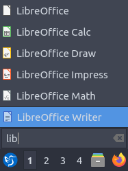The quick launch bar allows you to conveniently launch your file manager (PCManFM) and web browser (Firefox) by left clicking on the program. If you right click on the icons in quick launch on something like Firefox will have items for each program. To add a program to quick launch open the menu and find it there and drag it down onto the panel. To move an item on your quick launch to the left right click the icon and select or press Control and drag the icon to the left. To move an item to the left right click the icon and select or press Control and drag the icon to the right. Another way to reorder items on quicklaunch is to hold Control and drag and drop to the desired position. To remove an item from quick launch right click on the icon and select . To show your desktop press the blue show desktop button between quick launch and the taskbar. To see all your windows again press the blue show desktop button again.
The taskbar lists the windows you currently have open. To bring one of these windows to focus simply left click the button with icon and name on the task bar. If you have multiple of the same window left clicking will open the group, allowing you to select between the different windows by left clicking. If you want to close a group of multiple windows you can right click the group and click . To see a list of all the windows in a group mouseover the group of windows on the taskbar. If you want to close one window out of a particular group left click to bring up the single window and then right click on the window and select .
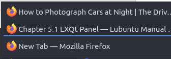On a single window on the taskbar to move it to a different desktop right click to move the window to the desired desktop. To move a window to your current virtual desktop right click on the window on your taskbar and select . If you have multiple monitors you can right click and select to move a window to the next monitor. To move a window back to a previous monitor right click on the taskbar and select . Right clicking and selecting Move lets you drag the application around to the desired point on the desktop. The resize option from the same window lets you resize the window you right clicked on. Right click and select on a window to maximize it. Right clicking on window will return a window back to its original size. To minimize a different window from the task bar you can minimize by right clicking on the window on the taskbar and selecting . Right clicking on a window will make the window only your titlebar.
Right clicking on the taskbar will allow you to have move a window , , or . Finally to close a window with right click on the taskbar and select will close the window. If you middle click on an item in the taskbar you will close the window. If you try to close a program that is not responding you will be asked if you want to end the task. To move items around on the taskbar into a particular order left click and drag them to the desired position.
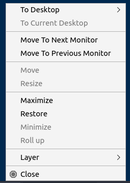The removable media applet will allow you to manage your remove flash drives and external hard drives and to unmount them without data loss on your system. To unmount such devices left click on the panel that looks like a disk and then click the eject button that is an upward pointing arrow. To open your removable media click on the removable media applet left click on the removable media to open the external media in your file manager.
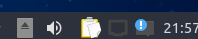In the system tray there there are multiple widgets. To see more on how to use nm-tray which manages network in the tray see chapter 3.1.5. Also included is Qlipper which to see how to use view how to view chapter 2.4.5. Other Programs you install can also place a tray icon here as well. With the volume applet you can change the volume by using the mouse-wheel with the mouse over the speaker icon or left click the speaker icon and drag the volume up and down or press Up arrow or Down arrow. To mute the volume with the button at the bottom of the volume meter or middle click on the volume applet. To see what the current volume is you can hover the mouse over the volume applet. To close the volume applet press the Escape key.
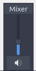Next over to the right is the status notifier applet with a blue exclamation point over a white rectangle. To view notifications you may have missed while away from the keyboard left click on this applet. To bring up a particular notification left click on that notification from the list and it will pop up like notifications on your screen. To clear all notifications click the button that says Clear All for notifications.
To the far right is a clock, you can left click the clock to bring up a pop up calendar window. To go to the next month on the calendar press the rightward pointing arrow. To go the previous month on the calendar press the leftward pointing arrow. Another way to change months on the calendar is to use the mousewheel. To change the month on a calendar to list all months in the year left click on the month and then select the month you want from your menu. To change the year on your calendar left click on the year in the calendar and then use up arrow or down arrow or the mouse wheel to select the year. Too see what week of the year it is read the number on the far left of the calendar.
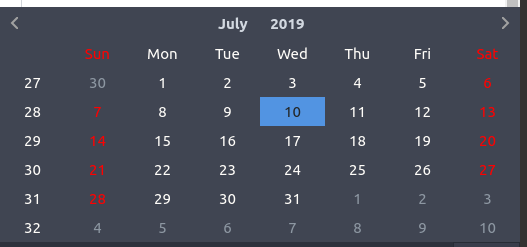If you are on a laptop the panel will also show the battery meter to show how much power you have remaining. To view your current charge level mouseover the battery meter and it will show if your battery is charging by mousing over. To view information about your battery left click the battery icon. The field Energy Full Design shows how much power your battery held when it was brand new. The field Energy Full shows the current full charge of your battery in your current health.The Energy Now shows how much power is in your battery. The Technology field shows what kind of battery you have.
As mentioned below, the panel is highly configurable and you can customize it by right clicking at various places. If you do not want to mess up your panel right click on the panel and select checkbox and do the same again to unlock your panel.
Customizing¶
To change many panel settings right click not on the main taskbar and select . To close each of these windows you open by right clicking press the Escape key.
The Placement tab has settings for where the panel is. The Size menu lets you increase or decrease the width of the panel. Length has two fields the one is either or is to change the length of the panel in pixels while percent is a percent of the entire screen size that changes if you change resolution. The first is the number of pixels or percent of the screen you want the panel to cover. The Icon size makes the size of the icons bigger or smaller on the panel. If you want multiple rows in your system tray and taskbar make the Rows field. To move the panel there is a drop down menu of Position that can move it to the side of the screen you want. The Alignment drop down menu lets you set the alignment of the panel on your screen. Keep in mind changing the alignment will not change anything if your panel takes the entire screen. To change the position of your panel use the Position field to move the panel on your screen around. If you have multiple monitors the Position field will have different options for moving the panel onto different monitors.
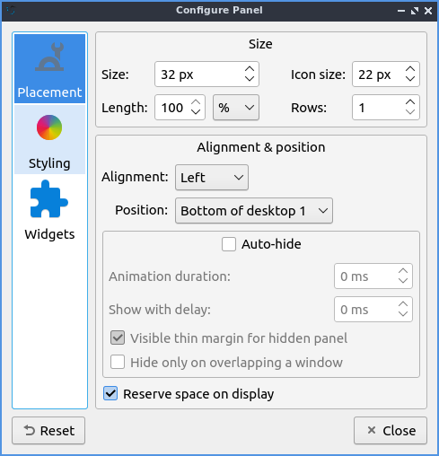If you want to autohide the panel check the Auto-hide checkbox in panel settings. To change how long the animation takes to show or hide the panel change the Animation duration field. To show how long your panel will appear when it comes back after hiding in milliseconds change the Show with delay field. To show a little of the panel visible when the panel is autohidden check the Visible thin margin for hidden panel checkbox. To only hide the panel when the panel overlaps a window check the Hide only on overlapping a window checkbox. To have the space for the panel not be used for anything else check the Reserve space on display checkbox.
To change the appearance of the panel use the Styling tab. To change to a custom font color press the Font color checkbox. Press the dropper button to bring up a widget to choose the custom color. The checkbox for Background color sets a background color custom for the background of LXQt-panel and the dropper brings up how to select which color. If you use a compositor and want to change the background opacity for the panel you can change how transparent the background is with the Background opacity slider. To add an image to your panel background press the checkbox Background image and press the the dialog button on the right to choose your file.
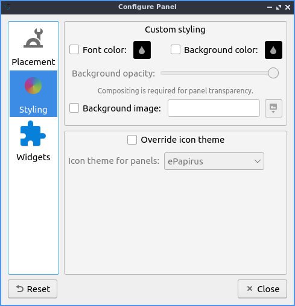The checkbox for Override icon theme lets you choose a non system default icon theme for LXQt-panel. The dropdown Icon theme for panels lets you see what that icon theme from the dropdown list. If you do not like your changes to the system you can press the Reset button to reset changing to before trying to customize the panel.
The Widgets tab lets you change the widgets or individual items on the panel and their configuration. You can also get to this directly by right clicking on the panel and select . To move an applet down on the order of presentation press the down arrow button while the up arrow button moves the applet up on the order of presentation. To add a new widget click on the widget on the panel configuration screen and press the + button and select the widget you want to add some of which are not on the panel by default. To remove an applet you do not want you can press the - button. The dark circle with three blue dots button has the settings for certain but not all of the applets in the panel for example the Application menu and Task manager are customizable but Quick launch and Show desktop do not.
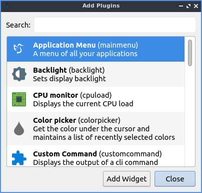- Shipped applets not enabled by default:
Backlight
CPU monitor
Color Picker
Custom Command
Panel DOM Tree
Sensors
Spacer
System Statistics
To configure options for your Application Menu right click on the menu configure application menu or from the panel configuration dialog with the widget selected for application menu click on the circle with three dots button. The Icon checkbox lets you choose a custom icon to use in your menu if you want one and then use the folder button to browse for the path of the custom file you want for your menu. The checkbox for Button text lets you add text that can be anything you want to your menu. To change your own font size check the Custom font size checkbox and change your font size on the field to the right. To change the shortcut to open the menu from the default Left Super (Windows) you can press the button for keyboard shortcut and a countdown will begin a countdown and press the button. To choose another file to use as a menu press use the Menu file field to choose a different menu. To set a custom keyboard shortcut to open the menu left click on Click the button to record shortcut button then press the keyboard shortcut you want.
To turn off searching in the menu uncheck the Filter menu entries checkbox. To turn off showing matching items directly in top layer of the menu uncheck the Show matching entries checkbox. Leave both of these checked to allow searching. To set the most number of search results in the menu change the Maximum visible items field. To change how wide each search result can be change the Max. item width field. To not hide what section of the menu everyone has Hide menu entries while searching checkbox. To not clear your search upon reopening the menu uncheck the Clear search upon showing menu checkbox.
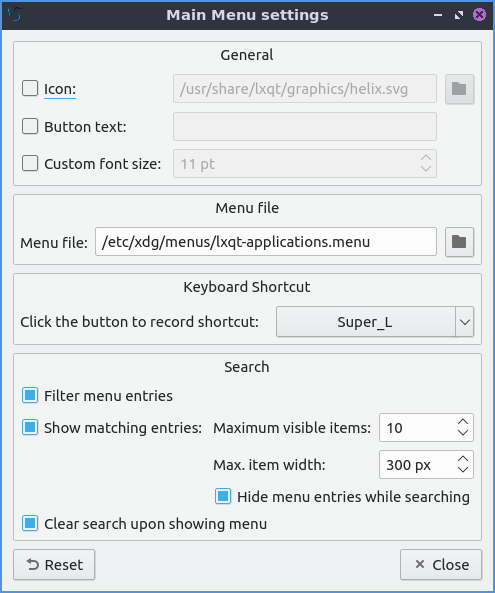To customize the Desktop switcher right click on the desktop switcher or press the three dots button. To change the number of rows on your desktop change the Number of rows field. To change how desktops are labeled change the Desktop Labels field. To only show the current desktop check the Show only active desktop checkbox. To change the name of each desktop enter a name under Desktop Names.
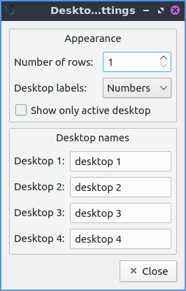To move an item in quick launch to the right right click on the icon and select . To move an item in quick launch to the left right click on the icon and select . To remove an item from quicklaunch right click on the icon . Another way to move an item on quicklaunch hold Control and drag thee quick launch to where you want. To add an item to quick launch click and drag it down from the main menu.
To change options for your task manager or taskbar open the panel configuration dialog select Task Manager (taskbar) and click the three dots button. The checkbox for Show only windows from desktop will only show windows from a certain desktop and will have a drop down that will default to the current desktop but can also be shown. To hide windows on a different screen check the Show only windows from panel’s screen checkbox. To have the taskbar only show minimized windows check the Show only minimized windows. To raise minimized windows on your current desktop check the Raise minimized windows on current desktop checkbox. To close windows on a middle click check the checkbox Close on middle-click. To cycle windows by scrolling with the mousewheel check the Cycle windows on wheel scrolling checkbox. The Window grouping checkbox will group multiple windows of the same program into a group of windows. The checkbox for Show popup on mouse hover will allow you to hover the mouse over the window group to show them off. If you want all windows of the same program next to each other check the Put buttons of the same class next to each other checkbox.
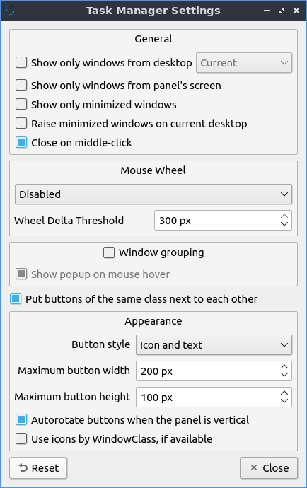To change the look of your taskbar in the same window as above the appearance section the Button style menu will change whether to show only the icon or the icon only for only the icons. To show window and the text label of the program . will work best with a panel aligned to the left or right side of your screen. To have only the text on your taskbar and no icons select . To change the maximum width of a button change the Maximum button width which is measured in pixels to how wide on maximum a button could be. To change how high a button will be when a panel is vertical change the Maximum button height field. To reset your changes to this window press the Reset button.
The settings for Removable Media is able to be opened up is right click the applet from When a device is connected you can select and , , or . If you want to reset the setting for this press the Reset button. To change what to do when the eject button is pressed on optical drives change the When eject button is pressed menu.
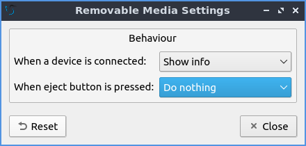To configure the volume applet right click on the volume applet and select . To change which audio output to have the applet control change the dropdown at the bottom of the Device to control box. To switch to changing sound settings for only ALSA press the ALSA button. To switch back to changing pulse audio settings press the PulseAudio button. To toggle muting on middle clicking check the Mute on middle click checkbox. To toggle having to click to bring up the volume applet check the Show on mouse click checkbox. To allow your volume in software to be over 100 percent check the Allow volume beyond 100% checkbox however this will cause distortion. To always show notification on volume changes check the Always notify about volume changes checkbox. To notify about volume changes via keyboard check the Notify about volume changes with keyboard checkbox. To change how what percentage your volume meter changes use the Volume adjust step field. To change what you use as your mixer type the command in the External Mixer field.
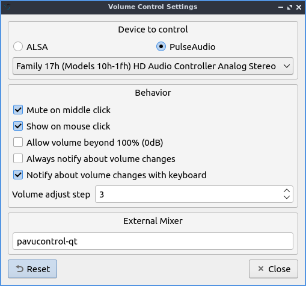To change settings of your Status Notifier press the … button in the list of applets or on the status notifier applet left click on . To change how long to have something visible you will autohide will have change the Attention period. To hide or authide notifications from a particular application is to change the app settings under the:guilabel:Visibility column.
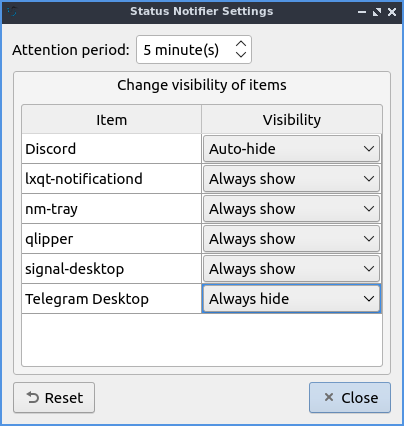To change the settings on your clock right click on the clock and then . To change settings on how your clock shows stuff use the Display format tab. The Format drop down menu allows you to change how the clock shows. To select a short format allows you to have a preselected short format which shows a 12 hour format and am just telling you what time it is. Selecting long from the menu will show you the time with seconds and the time zone. To have a customizable clock message select custom and then checkboxes to show seconds, pad the hours with zeros or to use a 12 hour format. The Time zone checkbox will show your your time zone. The Position drop down says where to put the time zone on the clock. The Format field changes how the time zone is displayed on your clock. To change how the date appears change the Format field.
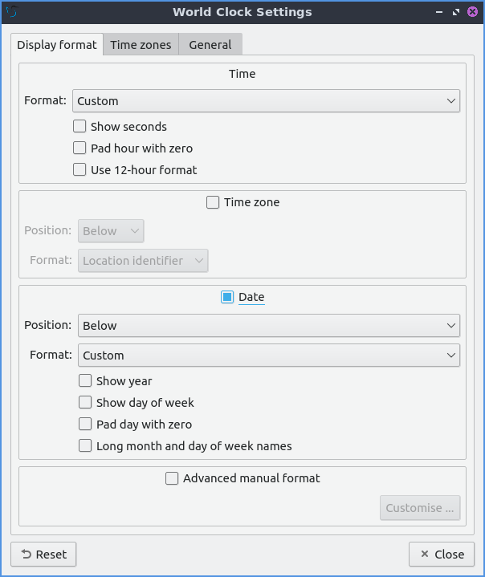To show the date on the clock check the Date checkbox. To change where the date appears change the Position drop down menu.To further customize your panel select from the Format drop down. To show the year press the Show year checkbox. To show what day of the week it is check the Show day of week checkbox. To make the day two digits check the Pad day with zero checkbox. To not abbreviate the months and days of week check the Long month and day of week names checkbox. To reset your changes to the clock press the Reset button.
To add two or more panels right click on the panel and and a new panel will be created with the dialog to customize your second panel. To remove a panel right click on the panel and select and you will be asked if you really want to do this as it can’t be undone. To then make your new panel useful you will need to add widgets which you will need to see the above section.
Non-Default widgets¶
To have a bar that shows CPU Load shows a bar graph with your CPU usage. To bring up settings for your CPU usage is right click on the CPU bar . The Show text checkbox shows a number for CPU usage. The field for Update interval is how often to update your CPU usage. The Bar orientation says what side to start the bar graph. The Bar width is how many pixels wide to make the bar graph. If you want to reset your changes press the Reset button.
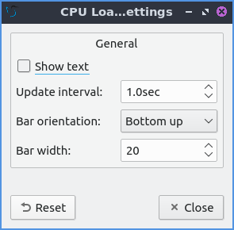The Color picker is shows what color something is on your screen usually useful for web developers. To get a color off the screen press the color dropper button and your mouse will turn into crosshair and then left click on what you want to take the color. Then a numeric field to the right of the dropper will appear with the color in a numeric field to the right.
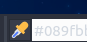To use your sensors widgets which you would have to add manually as shown above. A sensor bar will appear with as many sensors as on your panel. To view the temp as a number mouse over the sensor bar to see what your temperature is in a number in the Cur field. Also shown on mouseover is the Crit field shows the temperature the sensor should not read above without overheating.
To customize the sensors right click on the sensors applet . The Update interval(seconds) field lets you choose how often in seconds to update the sensors. The Temperature bar width field shows how wide to make the bar for your sensors. The Temperature scale field lets you select Celsius or Fahrenheit for your sensors. The checkbox Warning about high temperature puts a warning if your temperature gets too high. If you want to reset your settings press the Reset button.
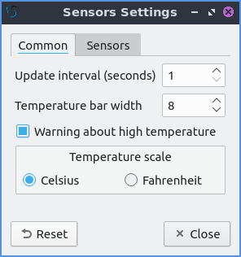To have a custom command add the Custom Command widget. To have this have meaningful output you need to configure the widget by right clicking on the Custom Command widget and selection Configure “Custom Command”. To have the output not rotate when the panel is vertical uncheck the Autorotate when the panel is vertical checkbox. To change what output your custom command has left click the button next to Font. To type the command you want to run type in the box above and to the right of Command. To run the command with bash running the command check the Run with “bash -c” checkbox. To change if or how often the command is run on repeat check the Repeat command after checkbox and change how often it runs in the field to the right. To change the maximum width the output of the text can be type in the Max Width field. To run a command with clicking on the applet enter the command in the Click in mouse commands. To run a specific command upon going up on the mouse wheel enter the command in the Wheel Up field. To run a specific command with scrolling down on the mousewheel enter the command in the Wheel Down field.
The Sensors tab provides settings for each individual sensor on your processor. To enable/disable each sensor press to the Enabled checkbox for each sensor. The Label shows a label for each sensor. The Color column shows the color for the bar to appear in the panel and you can bring up a dialog to change color by left clicking on the button. To switch to a different chip to set the sensors for change the Detected chips menu.
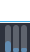To add a spacer to your panel add the spacer widget. It creates a blank space on your panel which can separate different items. To change how wide your spacer is change the Space Width field to the number of pixels you want the spacer to be wide. The setting for Space type selects , , or for changing the spacers appearance.
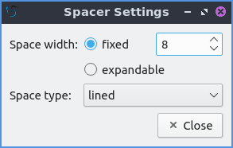To add an easy way to change brightness to your panel add the Backlight widget. To bring the applet to change backlight level left click on the icon. To make the backlight more faint drag the slider to the bottom and to make it brighter drag the slider towards the top.
Version¶
Denios-OS ships with version 1.1.0 of LXQt-panel.
How to Launch¶
LXQt-panel should auto launch by default. If you need to manually start it, run
lxqt-panel
from the command line.